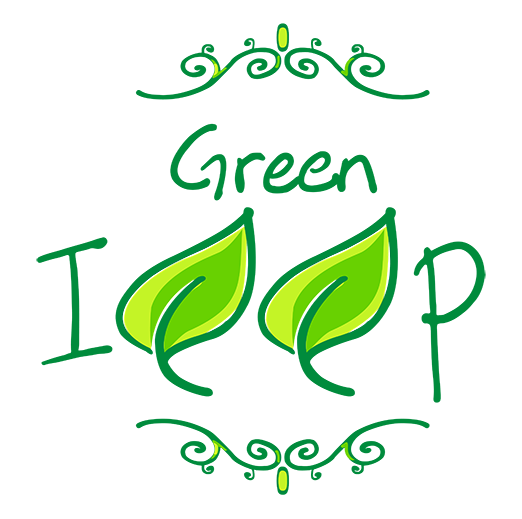

About Native Plants at ICCP
- Over the past few years, ICCP has been part of the Sacred Grounds effort, a National Wildlife Federation program in collaboration with the Chesapeake Bay Trust, and put in place several native plants gardens.
-
A plant is native if it has occurred naturally for thousands of years in a region, ecosystem, or habitat without human introduction. Native plant species provide essential habitat and food sources for local birds, pollinators, and other wildlife.
- ICCP and community volunteers, through these gardens, have ensured an eco-friendly habitat for Maryland native plants and animals.
- Below are a few examples of ICCP working together to put these gardens in place for the community.

© 2025 Sufyana and Aydina Johnson. All rights reserved.